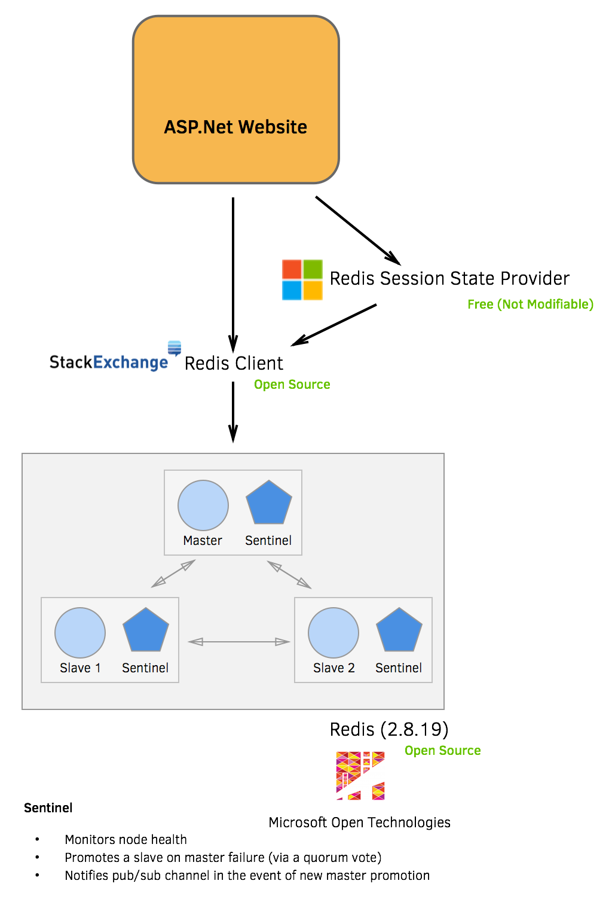

Microsoft's Redis Implementation - Mind the Gap
Lesson's learnt Redis on Windows.
Originally I had this as one big blog post, but I've decided to split it up into the technical issues and conjecture. See part 2 here.
Redis - Microsoft Open Technologies
Microsoft Open Technologies, a subsidary of Microsoft, has a port of the popular Redis database. A client I am currently consulting for was looking at changing from an in-memory session state provider to an out-of-process session state provider and Redis was chosen as the initial provider.
Beware the feature gap
The latest official version of Redis is 3.0.0. The latest stable version of Redis that runs on Windows (provided by Microsoft Open Technologies) is version 2.8.19.
Much of what you read online will be on the latest version of Redis available, so make sure you consider the version of Redis that the documentation relates to when making decisions.
So what is the gap between the two versions? Redis Cluster.
Now, before you go whacking the panic button it isn't as bad as it sounds. The earlier versions of Redis (including the Windows variant) do offer clustering, it is just that the failover handling is done in a different way.
Failover options
Aside from data sharding, the other big feature of Redis Cluster is how it handles failover. Here are the options that are available to you.
Redis Cluster
Redis Cluster (Redis 3.0) is essentially self managing. The nodes of the cluster will look after themselves and propogate masters in the event of failover. If a client attempts to talk to a master that has since recycled into a readonly slave it will received a MOVED failure message.
Note: This is my interpretation of the Redis Cluster documentation. Take what I've said with a pinch of salt :).
Redis Sentinel
Redis Sentinel is available to you with the Windows port of Redis. You run it using the redis-server executable, but with a --sentinel command switch.
I'm not going to go into too much detail as to how it works as the official documentation explains this well.
But there are two key differences with Redis Cluster.
- It is not a self-managed cluster, you need to run a seperate set of processes in order to monitor cluster health.
- In order for a client to know that a new master has been promoted it needs to subscribe to switch-master messages published by Sentinel. The client then needs to use this new master.
Infrastructure
You could potentially use products such as VMWare Fault Tolerance and thus take the responsibility away from the client code. Microsoft Azure uses Redis 2.8./* and this is probably the approach they took in regards to handling fault tolerance.
Important Note: For that reason this only an issue for self-hosted Redis deployments.
Big red button
This is the approach that StackExchange take through their Opserver tool. According to this post on Stack Exchange (which is a year old) they hit the 'big red button' when they notice a failover.
.Net clientside
There are two main libraries available to .Net developers when interacting with Redis. The StackExchange.Redis client and the ServiceStack client.
ServiceStack is a commercial product but it looks to have Sentinel support.
If your organization doesn't want to shell out for ServiceStack then you're probably going to need to look at the StackExchange.Redis client. This is the client API that Microsoft have chosen for their session state provider. The library has a dependency on the strongly named StackExchange.Redis provider.
The diagram below illustrates the between dependencies if you want to use Microsoft's session state provider.

The failover gap
There is an issue at present where the StackExchange library doesn't listen to the Sentinel pub/sub channel for master promotion in the event of a failover. In the event of a failover the Redis client will continue to try and talk to a node that may now be a slave after being demoted.
This flows onto the Microsoft session state provider as on initialization it only reads from the web.config for the cache node connection strings.
Plugging the gap
Don't want to use a fault tolerance products or hit a 'big red button'? These options are still available to you.
If you are using Microsoft's session state provider then you are going to need to either write your own or inherit and override some of its behaviour. Principally you are going to want it to connect to Sentinel in order to get the current master (as the web application may have just recycled) and you are also going to want to get from Sentinel what the current master is in the event of a failover.
This configuration from Sentinel should probably be stored in a seperate singleton configuration to be re-used by subsequent Redis connections.
In terms of actually figuring out when a new master has been promoted here are some avenues available to you.
Listening to Sentinel's pub/sub channel
This is as per the issue I linked to earlier which will inform you on the subscription whenever Sentinel has promoted a new master.
I have personally not used this fix. Also be aware that it will create a subscription per connection which is probably not ideal, particularly if you are using Microsoft's session state provider as it will create a StackExchange.Redis connection per provider instance.
If you only want to create one subscription per AppDomain then you'll need to run a background thread that runs indefinitely. There are plenty of articles from Microsoft that state that this is not good practice.
Exception Handling
You could handle and parse Redis exceptions picking out those that relate to a down (or demoted) master.
There could be some restrictions in your topology here as you will want to know when you are communicating with a slave so you're probably going to want to ensure that all of your slaves are read-only (which is the default).
You may also want to consider limiting the number of requests for the current master from Sentinel when a potential failover has occurred.
This approach is likely to resolve in a longer period of time before the client (web application) recovers from a failover but doesn't involve having a backend process that watches the Sentinel pub/sub channel.
So where is the pull request?
Here I am writing to 'complain' about valuable contributions made by many individuals to the development community often investing significant amounts of their own time. Shouldn't I just fix it? Isn't that, after all, the spirit of open source?
Chances are most of the work to resolve this can be done in the StackExchange client. Once we've figured out how to solve this issue for our client I may create a more generic solution as a PR. The only issue I have this stage (aside from available personal time) is that a more generic solution that doesn't involve having a subscription per Redis client instance is likely to involve a fairly significant PR.
But, for those intrepid adventurers that are starting (or have already started on) their Microsoft Redis journey be warned there is a gap to consider.
But isn't this all Microsoft's fault? I go into the perceived issues in a seperate blog post as a kind-of part 2.